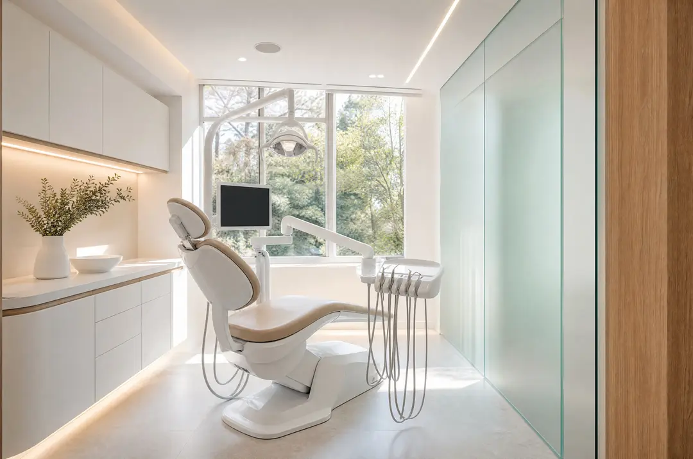

Vorsorge und Prophylaxe
Die meisten Probleme sieht man, lange bevor sie wehtun. Deshalb nehmen wir uns für Kontrolle und Zahnreinigung mehr Zeit als üblich und zeigen Ihnen auf dem Bildschirm, was wir sehen.
- Kontrolle und Früherkennung
- Professionelle Zahnreinigung
- Kinderzahnheilkunde
- Behandlung von Parodontitis
- Aufbissschiene bei Knirschen